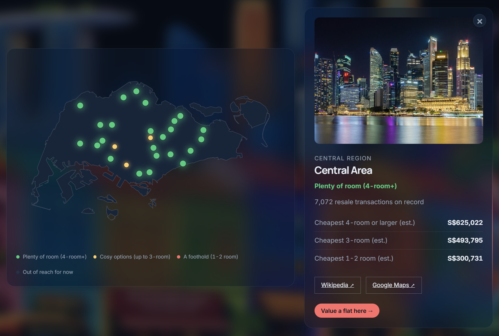
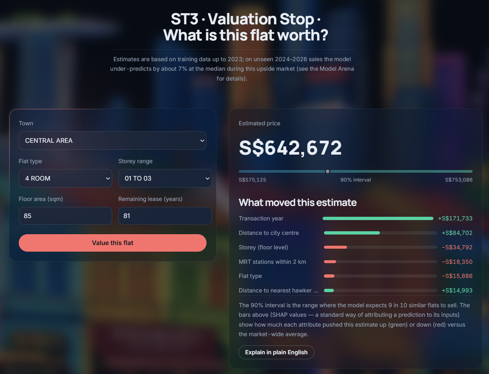
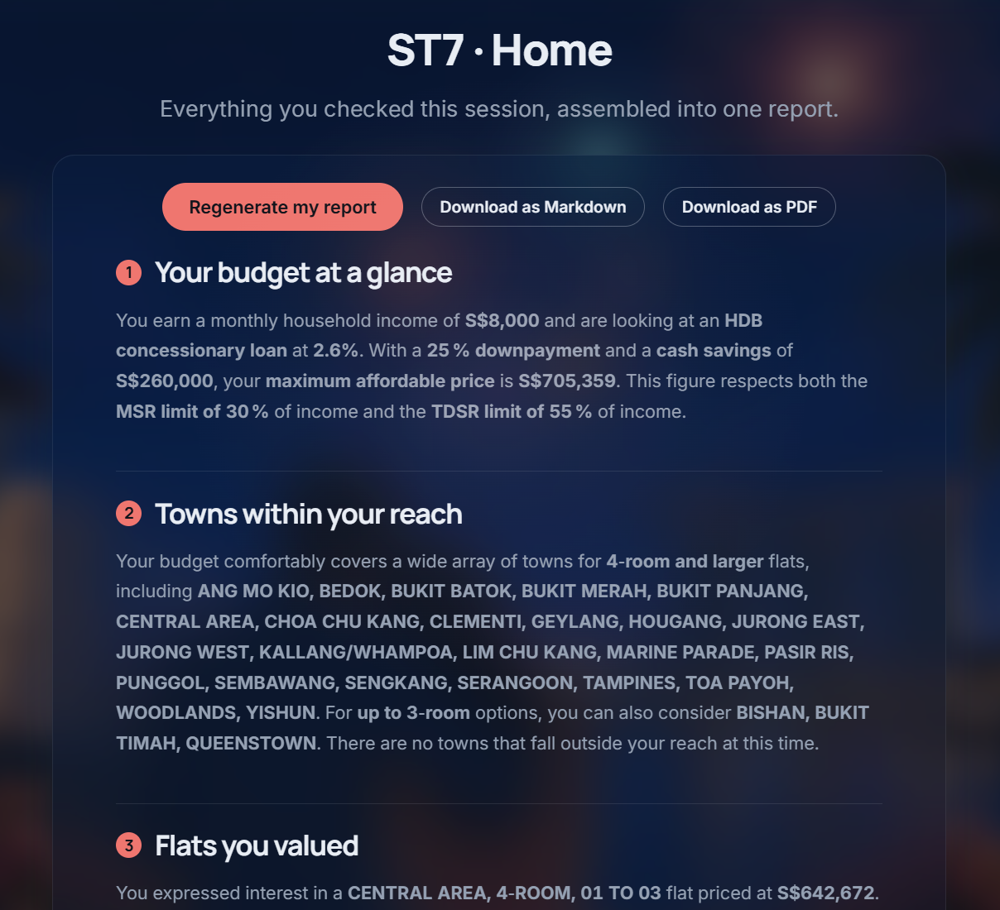

Explainable AI for Singapore HDB resale valuation: from 981,450 transactions to a deployable web product.
Buying an HDB resale flat is the largest financial decision most Singaporeans make. Every tool on the market prices a flat you have already picked. None of them starts from what you can actually afford.
Every other tool goes flat price. We inverted it: finances flats.
1,534 profiles priced, then intersected with MAS rules. Output: a map.
Monthly serviceability and upfront cash, by bisection.
Every S$ figure checked against a deterministic fact sheet.
Six models. Train to 2023 (915,353 rows), test from 2024 (66,097 unseen sales). Bars are test RMSE; labels add R² and median APE.
TreeSHAP prices every input. Mean |SHAP| is what a feature moves a valuation by, in Singapore dollars.
A temporal split shows what a random split hides. Out of distribution our 90% intervals collapse: 52.48% of real 2024-2026 sales printed above our 95th percentile, only 0.81% below our 5th. We under-predict in a rising market, and we say so.
Median bias −7.2% on 2024-2026 sales.
Prediction becomes decision. MAS rules turn a price forecast into what a household can actually borrow, solved exactly. Ported to JavaScript: 15/15 parity tests green.
One cell = one (town × flat type × storey) profile.

ST2 · Budget. The same engine, live in the product.
A scrollytelling journey, not a dashboard. Eight stations on the HDBrain Line. Zero build tools, runs offline, deploys free.

ST3 · Valuation
Point estimate, 90% interval, and per-flat SHAP in dollars.

ST7 · Home
The LLM writes the report. The engine owns every number.
Data data.gov.sg (HDB resale prices, CPI 1961-2026) ·
OneMap · geoBoundaries · MAS · IRAS.
Scope Decision support, not a licensed valuation.